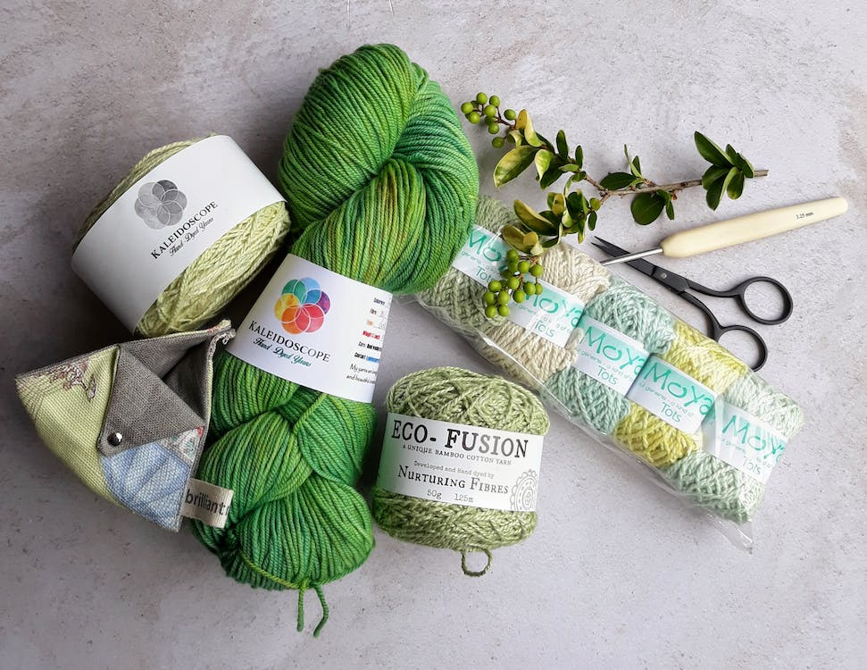
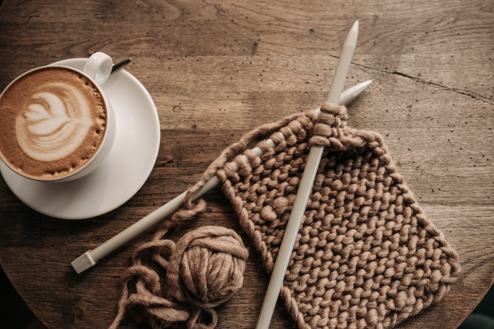
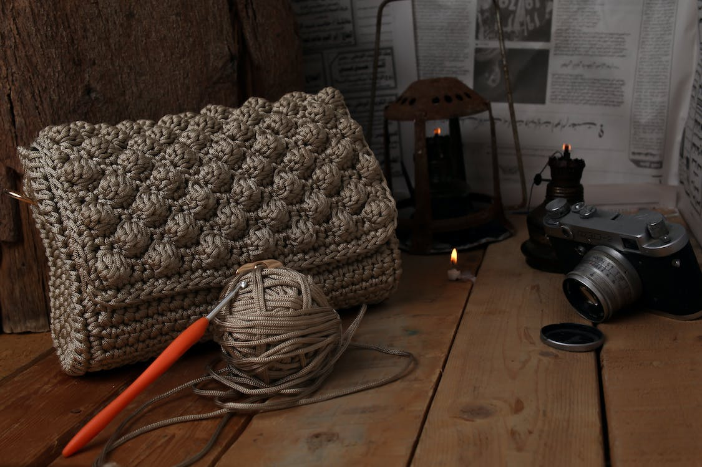
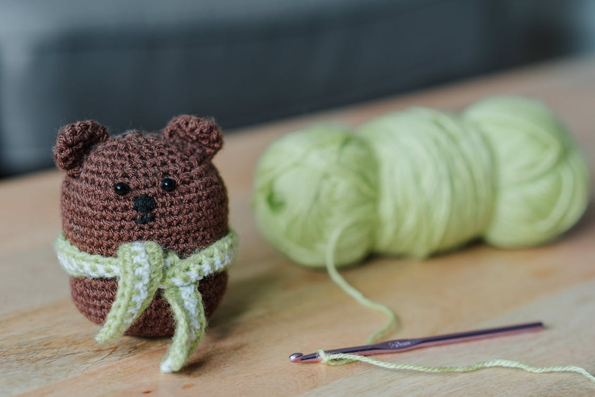

There are many different yarns and colors that you can use to create anything you want.

Once you learn how to crochet you can do it anywhere. Grab a coffee and enjoy!

You can make many things. Clothes, bags, accessories!

You can make things for around your home and plushies for any children in your life!